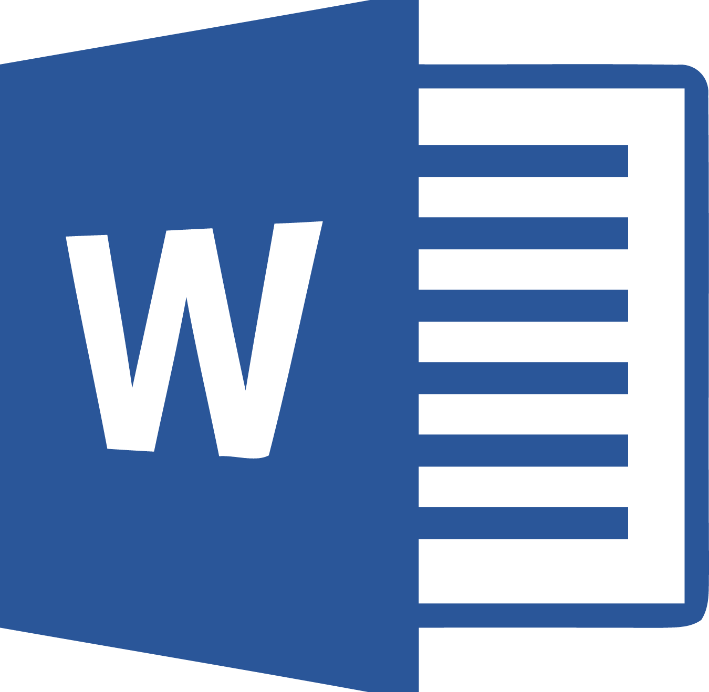
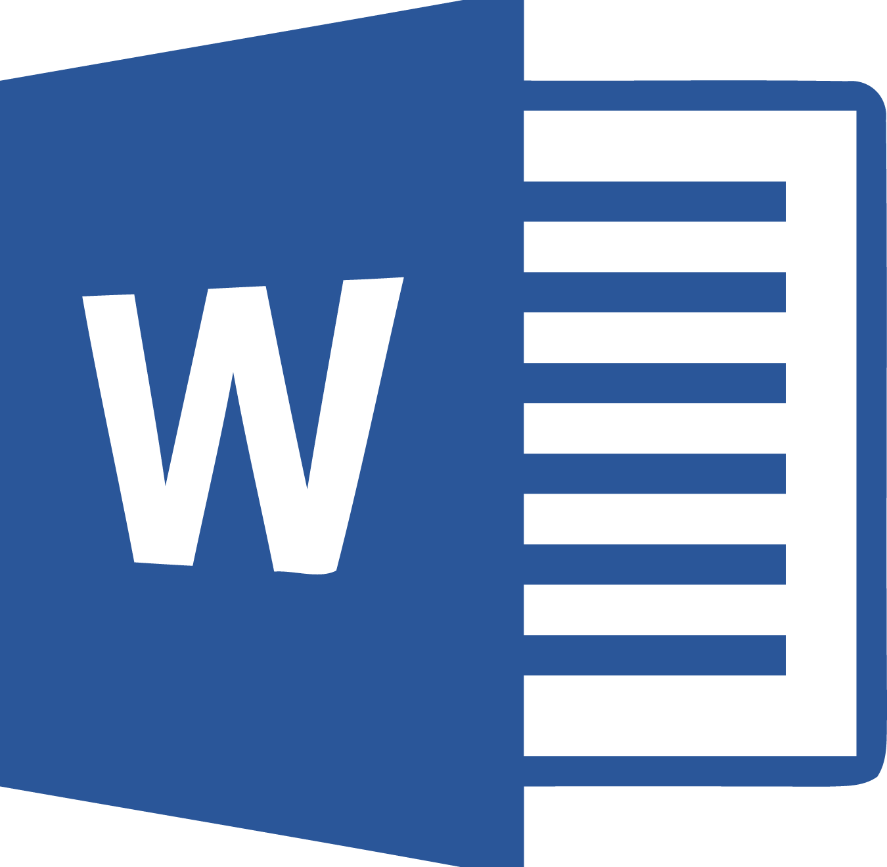

Microsoft Office  програми като Word ,
PowerPoint
програми като Word ,
PowerPoint  , Excel
, Excel
 имат много способности,
които са удобни и се използват навсякъде, но проблемът е, че много
хора не са фенове на цената. Като споменахме това, нека разгледаме
добри алтернативи, които да ни направят ежедневието по-лесно.
имат много способности,
които са удобни и се използват навсякъде, но проблемът е, че много
хора не са фенове на цената. Като споменахме това, нека разгледаме
добри алтернативи, които да ни направят ежедневието по-лесно.
1. Office Online
Всички приложения от Microsoft Office имат онлайн версия с повечето важни функции. Спокойно може да се работи с него благодарение на познатото меню и One Drive облака. Лесно може да се споделя с други хора и да превеждате файлове в PDF формат.
2. LibreOffice
LibreOffice е пълна безплатна алтернатива на MS Office, който се инсталира на компютъра и работи без интернет вързка. За да работи със MS Office трябва да се смени формата на файла от настройките и така може да си разменяш файлове с човек, който го използва без да излизат счупени. На него могат да се пишат цели книги, да се създават база данни и професионални презентации напълно безплатно. На повечето Linux платформи идва преинсталиран.
3. Google Docs, Google Slide, Google Sheets
Google се знае за услугите си в многото сфери на интернет. Една от тях е онлайн офисът им. Има всички главни функции, които бихте желали за личен проект. Може лесно да го споделите с други хора, да го превърнете в PDF формат и всичко това безплатно, но трябва да имате достъп до интернет.